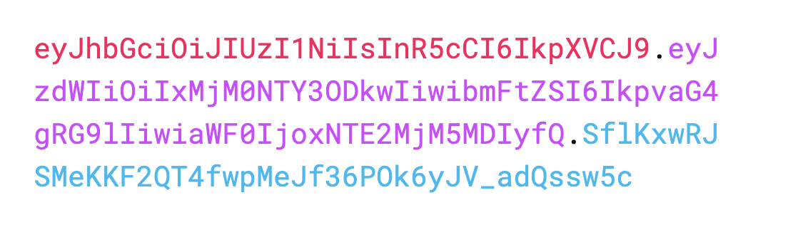

JSON Web Token（缩写 JWT）是目前最流行的跨域认证解决方案。JWT
跨域认证问题
互联网服务离不开用户认证。一般流程是下面这样。
1、用户向服务器发送用户名和密码。
2、服务器验证通过后，在当前对话（session）里面保存相关数据，比如用户角色、登录时间等等。
3、服务器向用户返回一个 session_id，写入用户的 Cookie。
4、用户随后的每一次请求，都会通过 Cookie，将 session_id 传回服务器。
5、服务器收到 session_id，找到前期保存的数据，由此得知用户的身份。
这种模式的问题在于，扩展性（scaling）不好。单机当然没有问题，如果是服务器集群，或者是跨域的服务导向架构，就要求 session 数据共享，每台服务器都能够读取 session。
举例来说，A 网站和 B 网站是同一家公司的关联服务。现在要求，用户只要在其中一个网站登录，再访问另一个网站就会自动登录，请问怎么实现？
一种解决方案是 session 数据持久化，写入数据库或别的持久层。各种服务收到请求后，都向持久层请求数据。这种方案的优点是架构清晰，缺点是工程量比较大。另外，持久层万一挂了，就会单点失败。
另一种方案是服务器索性不保存 session 数据了，所有数据都保存在客户端，每次请求都发回服务器。JWT 就是这种方案的一个代表。
JWT原理
JWT 的原理是，服务器认证以后，生成一个 JSON 对象，发回给用户，就像下面这样。
1 | { |
以后，用户与服务端通信的时候，都要发回这个 JSON 对象。服务器完全只靠这个对象认定用户身份。为了防止用户篡改数据，服务器在生成这个对象的时候，会加上签名（详见后文）。
服务器就不保存任何 session 数据了，也就是说，服务器变成无状态了，从而比较容易实现扩展。
JWT的数据结构
实际的 JWT 大概就像下面这样。

它是一个很长的字符串，中间用点（.）分隔成三个部分。注意，JWT 内部是没有换行的，这里只是为了便于展示，将它写成了几行。
JWT 的三个部分依次如下：
- Header（头部）
- Payload（负载）
- Signature（签名）
写成一行，就是Header.Payload.Signature。

Header
Header 部分是一个 JSON 对象，描述 JWT 的元数据，通常是下面的样子。
1 | { |
上面代码中，alg属性表示签名的算法（algorithm），默认是 HMAC SHA256（写成 HS256）；typ属性表示这个令牌（token）的类型（type），JWT 令牌统一写为JWT。
最后，将上面的 JSON 对象使用 Base64URL 算法（详见后文）转成字符串。
Payload
Payload 部分也是一个 JSON 对象，用来存放实际需要传递的数据。JWT 规定了7个官方字段，供选用。
- iss (issuer)：签发人
- exp (expiration time)：过期时间
- sub (subject)：主题
- aud (audience)：受众
- nbf (Not Before)：生效时间
- iat (Issued At)：签发时间
- jti (JWT ID)：编号
除了官方字段，你还可以在这个部分定义私有字段，下面就是一个例子。
1 | { |
注意，JWT 默认是不加密的，任何人都可以读到，所以不要把秘密信息放在这个部分。
这个 JSON 对象也要使用 Base64URL 算法转成字符串。
Signature
Signature 部分是对前两部分的签名，防止数据篡改。
首先，需要指定一个密钥（secret）。这个密钥只有服务器才知道，不能泄露给用户。然后，使用 Header 里面指定的签名算法（默认是 HMAC SHA256），按照下面的公式产生签名。
1 | HMACSHA256( |
算出签名以后，把 Header、Payload、Signature 三个部分拼成一个字符串，每个部分之间用”点”（.）分隔，就可以返回给用户。
Base64URL
前面提到，Header 和 Payload 串型化的算法是 Base64URL。这个算法跟 Base64 算法基本类似，但有一些小的不同。
JWT 作为一个令牌（token），有些场合可能会放到 URL（比如 api.example.com/?token=xxx）。Base64 有三个字符+、/和=，在 URL 里面有特殊含义，所以要被替换掉：=被省略、+替换成-，/替换成_ 。这就是 Base64URL 算法。
JWT 的使用方式
客户端收到服务器返回的 JWT，可以储存在 Cookie 里面，也可以储存在 localStorage。
此后，客户端每次与服务器通信，都要带上这个 JWT。你可以把它放在 Cookie 里面自动发送，但是这样不能跨域，所以更好的做法是放在 HTTP 请求的头信息Authorization字段里面。
1 | Authorization: Bearer <token> |
另一种做法是，跨域的时候，JWT 就放在 POST 请求的数据体里面。
在node中使用jwt：jsonwebtoken中文文档 ｜ jsonwebtoken npm
JWT 的几个特点
（1）JWT 默认是不加密，但也是可以加密的。生成原始 Token 以后，可以用密钥再加密一次。
（2）JWT 不加密的情况下，不能将秘密数据写入 JWT。
（3）JWT 不仅可以用于认证，也可以用于交换信息。有效使用 JWT，可以降低服务器查询数据库的次数。
（4）JWT 的最大缺点是，由于服务器不保存 session 状态，因此无法在使用过程中废止某个 token，或者更改 token 的权限。也就是说，一旦 JWT 签发了，在到期之前就会始终有效，除非服务器部署额外的逻辑。
（5）JWT 本身包含了认证信息，一旦泄露，任何人都可以获得该令牌的所有权限。为了减少盗用，JWT 的有效期应该设置得比较短。对于一些比较重要的权限，使用时应该再次对用户进行认证。
（6）为了减少盗用，JWT 不应该使用 HTTP 协议明码传输，要使用 HTTPS 协议传输。
JWT优点
使用 JSON Web Token 保护应用安全，你至少可以获得以下几个优势：
更少的数据库连接：因其基于算法来实现身份认证，在使用 JWT 时查询数据的次数更少(更少的数据连接不等于不连接数据库)，可以获得更快的系统响应时间。构建更简单：如果你的应用程序本身是无状态的，那么选择 JWT 可以加快系统构建过程。
跨服务调用：你可以构建一个认证中心来处理用户身份认证和发放签名的工作，其他应用服务在后续的用户请求中不需要(理论上)在询问认证中心，可使用自有的公钥对用户签名进行验证。
无状态：你不需要向传统的 Web 应用那样将用户状态保存于 Session 中。
JWT弊端
JWT 不是万能的，使用 JWT 也会带来诸多问题。就个人使用情况，使用 JWT 时可能会面临以下几个麻烦：
- 严重依赖于秘钥：JWT 的生成与解析过程都需要依赖于秘钥(Secret)，且都以硬编码的方式存在于系统中(也有放在外部配置文件中的)。如果秘钥不小心泄露，系统的安全性将收到威胁。
- 服务端无法管理客户端的信息：如果用户身份发生异常(信息泄露，或者被攻击)，服务端很难向操作 Session 那样主动将异常用户进行隔离。
- 服务端无法主动推送消息：服务端由于是无状态的，他将无法使用像 Session 那样的方式推送消息到客户端，例如过期时间将至，服务端无法主动为用户续约，需要客户端向服务端发起续约请求。
- 冗余的数据开销：一个 JWT 签名的大小要远比一个 Session ID 长很多，如果你对有效载荷(payload)中的数据不做有效控制，其长度会成几何倍数增长，且在每一次请求时都需要负担额外的网络开销。
- JSON Web Token 很流行，但是它相比于 Session,OIDC(OpenId Connect)等技术还比较新，支持 JSON Web Token 的库还比较少，而且 JWT 也并非比传统 Session 更安全，他们都没有解决 CSRF 和 XSS 的问题。因此，在决定使用 JWT 前，你需要仔细考虑其利弊。
安全隐患思考
考虑这样一个问题：如果客户端的 JWT 令牌泄露或者被盗取，会发生什么严重的后果？有什么补救措施？
- 如果单纯的依靠 JSON Web Token 解决用户认证的所有问题，那么系统的安全性将是脆弱的。由于 JWT 令牌存储于客户端中，一旦客户端存储的令牌发生泄露事件或者被攻击，攻击者就可以轻而易举的伪造用户身份去修改/删除系统资源，岁如按 JWT 自带过期时间，但在过期之前，攻击者可以肆无忌惮的操作系统数据。通过算法来校验用户身份合法性是 JWT 的优势，同时也是最大的弊端——它太过于依赖算法。
- 反观传统的用户认证措施，通常会包含多种组合，如手机验证码，人脸识别，语音识别，指纹锁等。用户名和密码只做用户身份识别使用，当用户名和密码泄露后，在遇到敏感操作时(如新增，修改，删除，下载，上传)，都会采用另外的方式对用户的合法性进行验证(发送验证码，邮箱验证码，指纹信息等)以确保数据安全。
- 与传统的身份验证方式相比，JWT 过多的依赖于算法，缺乏灵活性，而且服务端往往是被动执行用户身份验证操作，无法及时对异常用户进行隔离。那是否有补救措施呢？答案是肯定的。接下来，将介绍在发生令牌泄露事件后，如何保证系统的安全。
防范手段
不管是基于 Sessions 还是基于 JSON Web Token，一旦密令被盗取，都是一件棘手的事情。接下来，将讲述基于 JSON Web Token 的方式发生令牌泄露是该采取什么样的措施(解决方案包含但不局限与本文所涉及的内容)。
为了防止用户 JWT 令牌泄露而威胁系统安全，你可以在以下几个方面完善系统功能：
- 清除已泄露的令牌：此方案最直接，也容易实现，你需将 JWT 令牌在服务端也存储一份，若发现有异常的令牌存在，则从服务端令牌列表中将此异常令牌清除。当用户发起请求时，强制用户重新进行身份验证，直至验证成功。对于服务端的令牌存储，可以借助 Redis 等缓存服务器进行管理，也可以使用 Ehcache 将令牌信息存储在内存中。
- 敏感操作保护：在涉及到诸如新增，修改，删除，上传，下载等敏感性操作时，定期(30分钟，15分钟甚至更短)检查用户身份，如手机验证码，扫描二维码等手段，确认操作者是用户本人。如果身份验证不通过，则终止请求，并要求重新验证用户身份信息。
- 地域检查：通常用户会在一个相对固定的地理范围内访问应用程序，可以将地理位置信息作为一个辅助来甄别用户的 JWT 令牌是否存在问题。如果发现用户A由经常所在的地区 1 变到了相对较远的地区 2 ，或者频繁在多个地区间切换，不管用户有没有可能在短时间内在多个地域活动(一般不可能)，都应当终止当前请求，强制用户重新进行验证身份，颁发新的 JWT 令牌，并提醒(或要求)用户重置密码。
- 监控请求频率：如果 JWT 密令被盗取，攻击者或通过某些工具伪造用户身份，高频次的对系统发送请求，以套取用户数据。针对这种情况，可以监控用户在单位时间内的请求次数，当单位时间内的请求次数超出预定阈值值，则判定该用户密令是有问题的。例如 1 秒内连续超过 5 次请求，则视为用户身份非法，服务端终止请求并强制将该用户的 JWT 密令清除，然后回跳到认证中心对用户身份进行验证。
- 客户端环境检查：对于一些移动端应用来说，可以将用户信息与设备(手机,平板)的机器码进行绑定，并存储于服务端中，当客户端发起请求时，可以先校验客户端的机器码与服务端的是否匹配，如果不匹配，则视为非法请求，并终止用户的后续请求。